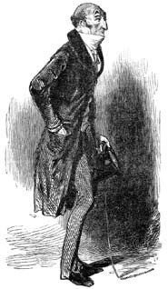
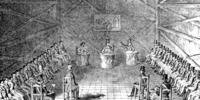

27 Mart 1897 gecesi
Kendimi okumaktan alıkoyamadığım günlüğünüze müdahale ediyorum; beni bağışlayın Yüzbaşı Simonini. Ama bu sabah sizin yatağınızda uyanmış olmam kesinlikle kendi arzumun sonucu değildi. Benim Rahip Dalla Piccola olduğumu (ya da en azından kendimi öyle sandığımı) anlamışsınızdır.
Bana ait olmayan bir yatakta, hiç tanımadığım bir evde, rahip cüppemin ve peruğumun izinin bile bulunmadığı bir yerde uyandım. Yatağın başucunda yalnızca sahte bir sakal vardı. Sahte bir sakal mı?
Günler önce de uyanıp kim olduğumu anlayamama durumu yaşamıştım ama o zaman kendi evimdeydim; oysa bu sabah bu hal bir başka evde ortaya çıktı. Sanki gözlerim çapaklı gibi hissediyordum kendimi. Isırmışım gibi dilim acıyordu.
Pencereden bakınca evin Maubert Çıkmazı'na, benim oturduğum Maître Albert Sokağı'nın tam ters yönüne baktığını gördüm. Laik bir kişinin yaşadığını anladığım evin ötesini berisini karıştırdım; ev sahibinin takma bir sakalı olduğunu anladım ve bu da –beni bağışlayın lütfen– onun ikiyüzlü bir ahlaka sahip olabileceğini düşündürttü. Gösterişli bir biçimde döşenmiş çalışma odasına geçtim; dipte bir perdenin arkasında bulunan küçük bir kapıdan koridora girdim. Burası sanki bir tiyatro sahnesinin arkası gibiydi; çok farklı tarzlarda giysi ve perukla doluydu; günler önce bir cüppe bulmuş olduğum bu koridoru şimdi ters yönde kat ediyor ve kendi odama doğru yürüyordum.
Masamın üzerinde bir dizi not buldum ve bunları genişçe yaydım; sizin yazdıklarınızdan anladığıma göre 22 Mart sabahı da aynen bu sabah olduğu gibi belleğimi yitirmiş olarak uyanmışım. O gün aldığım son notta yazdığım Auteuil ve Diana konusunu merak ettim. Diana kim acaba?
İlginç. Siz ikimizin aynı kişi olduğundan kuşkulanıyorsunuz. Ama siz hayatınıza ilişkin pek çok şey hatırlarken, ben benimkini pek hatırlamıyorum. Ayrıca güncenizin ortaya koyduğu üzere, siz benim hakkımda hiçbir şey bilmiyorsunuz, oysa ben sizin başınıza gelenlere ilişkin hiç de azımsanmayacak şeyler hatırladığımı fark ediyorum –ve ne rastlantıdır ki– bunlar sizin hatırlayamadığınız şeyler. Yani diyeceğim şu ki, eğer size ait pek çok şey anımsıyorsam, ben siz olamaz mıyım?
Belki de böyle değildir, biz iki ayrı kişiyizdir ve gizemli bir neden yüzünden ortak bir hayatın içinde bulmuşuzdur kendimizi; ben bir kilise mensubuyum ve sizin bana itiraf mührü altında anlattıklarınızı biliyorumdur. Ya da Doktor Froïde'un yerini alan kişiyimdir ve siz hatırlamasanız bile karnınızın derinliklerinden, gömülü tutmaya çalıştığınız anıları bulup çıkartmışımdır.
Her neyse, rahiplik görevim sizi dedeniz efendinin –Tanrı ruhundan merhametini esirgemesin– ölümünden sonra olanlara döndürmektir. Tabii, siz şimdi şu anda can verseniz, Tanrımız sizi o merhametli huzura kabul etmeyecektir, çünkü sanırım kendiniz gibi olanlara karşı iyi davranmadınız ve belki de bu nedenle belleğiniz sizi onurlandırmayacak bu anıları su yüzüne çıkartmayı reddediyordur.
* * *
Aslında Dalla Piccola, Simonini'ye olayların gayet önemsiz bir bölümünü aktarıyordu ve bunlar onunkinden çok farklı ve minik bir el yazısıyla yazılmıştı; gene de bu cimrice yansıtılmış notlar Simonini'nin ansızın zihnine üşüşen sözcükler ve imgeler yığınını asacak bir askı görevini görüyordu. Anlatıcı bunun özetini daha doğrusu gerektiğince genişletilmiş halini aktarmayı deniyor; bunu da bu uyarılar ve yanıtları daha tutarlı kılmak ve okuru rahibin alter ego'sunun küçük hatalarını sansürlerken kullandığı sahte erdemli tondan kurtarmak için yapıyor.
Öyle görüyor ki, sadece Yalınayak Karmelitlerin feshedilmesi değil, dedenin vefat etmiş olması bile Simone'yi özellikle sarsmamıştı. Belki dedesine bağlıydı ama sanki özellikle onu baskı altında tutmak için düzenlenmiş gibi görünen bir eve kapalı olarak geçirdiği ve hem dedesinin hem kara cüppeli eğitimcilerinin hep güvensizlik, kin ve içerleme duygusu uyandırdığı çocukluk ve ilk gençlikten sonra Simonino kendine duyduğu gölgeli bir sevginin dışında farklı duygular beslemekten aciz kalmıştı ve felsefi bir görüşün huzurunu yavaş yavaş kazanabilmişti.
Şöhretli din adamlarının ve Ancien Régime'e bağlı Piemonte soylularından en seçkin kişilerin katıldığı cenaze işleriyle ilgilendikten sonra ona dedesinin bütün mal varlığını bıraktığını açıkladığı vasiyetini okuyacak olan yaşlı aile noteri Rebaudengo ile buluşmuştu. Ne var ki noterin –sanki bundan hoşnutluk duyarcasına– açıkladığı bilgiye göre dedesinin bildirdiği ipotekler ve farklı kötü yatırımlar yüzünden bu mal varlığından geriye hiçbir şey kalmıyordu; içindeki mobilyalarıyla birlikte ev de alacaklılara gidecekti – muhterem kişiye duydukları hürmet yüzünden şimdiye dek ortaya çıkmayan alacaklılar toruna acımayacaklardı.
"Bakın sevgili avukat bey" demişti noter ona, "eskisine hiç benzemeyen yeni dönem eğilimleri daha iyi olabilir ama artık iyi aile çocukları da işe koyulmak zorundalar. Eğer pek mütevazı olan bu seçime gönül indirirseniz, size kendi yazıhanemde bir görev verebilirim; hukuk bilgisine sahip genç bir insan beni de rahatlatacaktır; sizi üstün yeteneklerinizin hak ettiği biçimde ücretlendiremem ama gene de kalacak bir yer ve onurlu bir yaşam sürecek kadar ödeme yapabilirim."
Simone ilk anda dedesinin ihtiyatsızca attığı imzalar yüzünden yitirdiği pek çok mal varlığına bu noterin konduğu duygusuna kapılmıştı ama buna ilişkin bir kanıtı yoktu ve bir şekilde hayatını kazanmak zorundaydı. Noterle temas halinde çalışırsa, günün birinde onunla ödeşebileceğini ve noterin el koyduğu mal varlığını geri alabileceğini düşündü. Böylece Barbaroux Sokağı'nda iki odalı bir evde yaşamaya ve arkadaşlarının devam ettiği meyhane ziyaretlerini aza indirgemeye alışarak pinti, otoriter ve kuşkucu Rebaudengo ile çalışmaya başladı; önceki konuşmasında kullandığı saygı ifadelerini ve Avukat Bey sözlerini bir kenara bırakan yaşlı noter ona patronun kim olduğunu belli etmek istercesine sadece Simonini diye hitap ediyordu. Birkaç yıl noter olarak çalışan Simone hukuki bilgileri edinmenin yanı sıra, yavaş yavaş patronun güvenini kazanmaya başlayınca onun asıl işinin her noterin yaptığından yani vasiyet, bağış, alım-satım ve başka sözleşmeleri onaylamaktan farklı olduğunu sezdi; yaşlı noter asla var olmamış bağışları, alım-satımları, vasiyetleri ve sözleşmeleri de onaylıyordu. Daha açık söylemek gerekirse, Noter Rebaudengo, makul fiyatlar karşılığında başkalarının el yazılarını taklit ederek sahte belgeler düzenliyordu ve tanıkları da çevredeki meyhanelerden sağlıyordu.
"Yanlış anlaşılmasın Sevgili Simone" diyordu artık yardımcısına sen diye hitap eden noter, "ben sahte belge düzenlemiyorum, sadece saçma bir kaza sonucu kaybolmuş, hazırlanabilecekken hazırlanamamış ya da hazırlanmış olması gereken bir özgün belgenin yeni bir kopyasını düzenliyorum. Örneğimi bağışla, söz gelişi ben senin Odalengo Piccolo köyünden bir fahişenin oğlu olarak doğduğunu ortaya koyan bir vaftiz belgesi düzenleseydim, bu sahte belge olurdu (Bunu söyledikten sonra örneğin küçük düşürücü özelliğinden ötürü kıkırdıyordu). Böyle bir suç işlemeye asla cesaret edemezdim, çünkü ben onurlu bir insanım. Ama sözün gelişi söylüyorum, bir düşmanın senin mirasına göz dikse ve sen onun ne babandan, ne anandan doğmadığını ama Odalengo Piccolo köyünden bir odalığın evladı olduğunu ve senin mal varlığına konmak için doğum belgesini ortadan kaldırmış olduğunu bilsen, ve bu sahtekâra şans tanımamak için bana kaybolmuş bu belgeyi yeniden yaz desen, ben gerçek namına sana yardım ederim; hakikat adına elimden geleni yapar ve hiç de pişmanlık duymam."

"Yanlış anlaşılmasın Sevgili Simone" diyordu artık yardımcısına sen diye hitap eden noter, "ben sahte belge düzenlemiyorum, sadece saçma bir kaza sonucu kaybolmuş, hazırlanabilecekken hazırlanamamış ya da hazırlanmış olması gereken bir özgün belgenin yeni bir kopyasını düzenliyorum."
"İyi ama siz o şahsı kimin doğurduğunu nereden bilebilirsiniz ki?"
"Sen söyleyeceksin bana! Sen onu iyi tanıyor olacaksın çünkü."
"Peki, siz bana güvenecek misiniz?"
"Ben müşterilerime daima güvenirim, çünkü sadece dürüst insanlara hizmet veririm."
"Peki, ya müşteri tesadüfen yalan söylediyse?"
"O zaman günahı ona aittir, bana değil. Eğer ben müşterinin bana yalan söyleyip söylemediğini düşünmeye başlarsam, o zaman güvene dayalı mesleğimi icra edemem."
Simone, Rebaudengo'nun sürdürdüğü mesleğin başkalarınca dürüst olarak tanımlanamayacağına inanıyordu ama yazıhanenin sırlarına ortak olmaya başladığından beri o da düzmece belgeler hazırlamaya girişmiş ve kaligrafi konusunda ustasını geçmiş, bu konuda olağanüstü yetenekli olduğunu keşfetmişti.
Bunun yanı sıra noter ya söylediklerini bağışlatmak için ya da yardımcısının zayıf yanını keşfettiğinden Simonino'yu (Cavour'un bile gittiği) Cambio gibi lüks lokantalara davet ediyordu ve onu bölgenin ünlü yemeği finanziera'nın gizemlerine alıştırıyordu: horoz ibiği, uykuluk, dana beyni ve testisi, sığır bonfilesi, mantar, yarım bardak Marsala şarabı, un, tuz, zeytinyağı ve tereyağı ve bütün buna hafif ekşilik verecek simyasal dozda sirke ile pişen bu yemek adının da çağrıştırdığı üzere redingot ile tadılmalıydı.
Simonino babasının yüreklendirmesine karşın kahramanlık ve fedakârlık amaçlı bir eğitim almamıştı ama bu akşam yemeklerinin hatırına ölene –tabii ki noter ölene– kadar Rebaudengo'ya hizmet etmeye hazırdı.
Maaşı, az da olsa artış göstermişti; noter hızla yaşlandığı ve buna bağlı olarak da gözleri daha az gördüğü, elleri daha çok titrediği için Simonino onun vazgeçilmezi olmuştu. Ama şimdi keyfe biraz daha fazla zaman ayırabildiğinden ve Torino'nun şöhretli restoranlarından (ah o Piemonte usulü kuzunun kızarmış beyaz et dolmasındaki nefaseti, kırmızı et kızartması, haşlanmış sığır, kemikleri ayıklanıp haşlanmış horoz, kızartmaların yanına haşlanan yeşil karnabahar, dört bütün yumurta, Parmigiano Reggiano peyniri, muskat cevizi, tuz ve biberden oluşan ve kızartmaların dibine sos olarak hazırlanırken içine bir diş sarmısak, tereyağı ve bir dal biberiye eklenen o sos) uzak duramadığından bu en derin ve candan tutkusunu doyuma ulaştırmak için genç Simonini bu gibi mekânlara yıpranmış giysilerle gidemeyeceğinin farkındaydı; sonuç olarak olanakları arttıkça gereksinmeleri de artıyordu.
Noterle çalıştıkça Simone onun özel müşterilere örtülü hizmetler vermekle kalmadığını –belki de bu hiç de yasal olmayan işinin yetkililerce öğrenilmesi durumunda kendini sağlama almak amacıyla– kamu güvenliğiyle ilgilenen kişilere de hizmet verdiğini öğrendi; kendinin de dile getirdiği üzere bir şüphelinin adil olarak mahkûm edilmesi için yargıçların, polisin gerekçelerinin boşa gitmediği konusunda ikna olmaları gerekirdi ve bunun için de bazı belgesel kanıtlar olmalıydı. Bunun sonucu olarak arada sırada yazıhaneye uğrayan ve noterin dilinde "Bürodan gelen beyler" olarak nitelendirilen bazı kimliği belirsiz kişilerle de temas kuruyordu. Bu Büro'nun ne olduğunu ve neyi temsil ettiğini anlamak için kâhin olmaya gerek yoktu: Hükümet yetkililerine özel işler söz konusuydu.
Bu beylerden biri olan Cavalier Bianco, bir gün Simone'nin çürütülmesi olanaksız bir belge düzenlemesi üzerine son derece memnun kaldığını dile getirmişti. Bu bey temas kuracağı kişiler hakkında önceden araştırma yapan biri olmalıydı, çünkü bir gün genç noteri köşeye çekerek ona hâlâ Caffè al Bicerin'e gidip gitmediğini sormuş ve özel bir görüşme için onu kafeye davet etmişti. Ve ona şöyle demişti:
"Sevgili Avukat Bey, sizin Majestelerinin sadık kullarından birinin torunu olduğunuzu ve sağlıklı bir eğitim aldığınızı çok iyi biliyoruz. Aynı zamanda babanızın da bizim de doğru bulduğumuz meseleler için can verdiğini ama bunu vaktinden çok önce harekete geçerek yaptığını düşünüyoruz. Bu nedenle dürüstlüğünüze ve işbirliği arzunuza güvenerek ve sizinle ilgili olarak çok hoşgörülü davrandığımızı da düşünerek, hem sizin hem de noter Rebaudengo'nun pek de övgüye layık işler yapmadığınızı bildiğimizi dile getirmek istedik. Sizin arkadaşlarınızla, yoldaşlarınızla, ruh dostlarınızla yani Mazzini, Garibaldi ve Carbonari yanlısı kişilerle görüştüğünüzün farkındayız. Genç kuşakların eğilimi bu yönde olduğundan çok normal elbette. Ama sorunumuz şudur: Bu gençlerin ani kararlar almalarını ya da en azından bunu yararlı ve mantıklı zamanlama dışında yapmalarını istemiyoruz. Birkaç ay önce yirmi dört isyancıyla birlikte gemiye doluşup üç renkli bayrak sallayarak Ponza Adası'na inen, oradaki üç yüz tutukluyu gemiye bindirip yerel halkın destek vermek üzere silahlarıyla onları beklediğini umarak Sapri'ye yelken açan Pisacane'nin bu çılgın eylemi hükümetimizi çok rahatsız etti. Hoşgörülü kişiler Pisacane'yi cömert buluyor, daha septik olanlar budala olduğunu düşünüyorlar ama aslında o bir hayalperestti. Özgürlüğe kavuşturmak istediği hödükler onu arkadaşlarıyla birlikte katlettiler; görüyorsunuz ki olaylar iyi hesaplanmadığı zaman iyi niyet, hüsranla sonuçlanabiliyor."
"Anlıyorum" demişti Simone, "ama benden ne istiyorsunuz?"
"Şöyle söyleyeyim. O gençleri hata yapmaktan alıkoymak istiyorsak bunun en iyi yolu kurumlara saldırı suçlamasıyla onları bir süre cezaevine koymak olabilir; cesur yüreklere gereksinme duyduğumuzda onları özgürlüklerine kavuştururuz. Bu nedenle onları komplo hazırlığında suçüstü yakalamalıyız. Onların hangi liderler için çalıştıklarını siz kesinlikle biliyor olmalısınız. Bu liderlerden birinden onlara bir mesaj gelmesi ve gençleri ellerinde silahlarıyla, rozetleriyle, bayraklarıyla ve silahlı Carbonari olduklarını belli eden başka zamazingolarıyla belli bir yere çağırması yeterlidir. Polis gelir, onları tutuklar ve her şey biter."
"Ama eğer o anda ben de onlarlaysam ben de tutuklanırım, değilsem de ihanet edenin ben olduğumu anlarlar."
"Ah hayır bayım, bunu düşünemeyecek kadar acemi değiliz biz."
Göreceğimiz üzere Bianco iyi bir plan yapmıştı. Ama bizim Simone'nin de üstün bir düşünme yeteneği vardı, öyle ki kendine önerilen planı dinledikten sonra olağanüstü bir karşılık biçimi tasarlamıştı ve Bianco'ya cömert idareden ne beklediğini bildirdi:
"Bakın Cavaliere, Noter Rebaudengo onunla birlikte çalışmaya başlamamdan önce pek çok yasadışı iş yapmıştı. Yeterince belge olduğundan ben bu olaylardan birkaç tanesini ortaya çıkartabilirim; bunu kimsenin canını yakmadan yapabilir, mesela medfun bir kişinin belgelerini ifşa edebilirim; sizin nazik yardımınız sayesinde de bu işi benim yaptığımı kimse öğrenmez ama savcılık gerekli belgelere sahip olabilir. Noteri kamusal belgelerde defalarca sahtekârlık yapmak suçundan mantıklı bir süre için güvene alırsınız; doğanın sürecini tamamlaması için mantıklı bir süre yeterli olacaktır, çünkü ihtiyarın içinde bulunduğu koşullar yüzünden fazla bir zamanı kalmadığı ortadadır."
"Sonra?"
"Noter hapse girdikten sonra, ben tutuklanmasından birkaç gün öncenin tarihini taşıyan bir sözleşme çıkartırım ortaya; bu sözleşmeye göre bir dizi taksit ödemeyi bitirmiş olan ben onun yazıhanesini satın almış ve artık sahibi olmuş olurum. Ona ödediğim varsayılan paraya gelince herkes dedemden yeterince miras yediğimi düşünüyordur ve bu konudaki gerçeği bilen tek kişi Rebaudengo."
"İlginç" demişti Bianco. "Ama yargıç ona ödediğiniz paranın nerede bulunduğunu soracaktır."
"Rebaudengo bankalara güvenmez ve bütün parasını yazıhanede bulunan ve nasıl açılacağını elbette bildiğim bir kasada tutar; o bana arkasını döndüğünde, beni görmediği için onun ne yaptığını bilmediğimi sanır. Şimdi yasa mensupları bir şekilde kasayı açacak ve boş olduğunu göreceklerdir. Ben Rebaudengo'nun önerisinin beklenmedik bir anda geldiğini, istediği ücretin düşüklüğü karşısında şaşırdığımı, öyle ki işini bırakmak için özel bir nedeni olduğunu tahmin ettiğimi söyleyeceğim. Ve onlar kasanın boş olduğunu görmenin yanı sıra şöminede kim bilir hangi belgenin külünü, yazı masasının çekmecesinde ise Napoli'deki bir otelden gelen ve ona bir oda ayrıldığını onaylayan yazıyı da görecekler. O noktada, Rebaudengo'nun yasalar tarafından izlendiğini hissederek kirişi kırma gereği duyduğu ve olasılıkla parasını da yollamış olduğu Burbonların yanında keyif yapmaya gittiği anlaşılacak."
"Ama yargıç karşısına çıktığında, sizin bu sözleşmenizden haber almışsa, bunu inkâr edecektir..."
"Kim bilir daha başka neleri inkâr edeceği için sorgu yargıcı ona inanmayacaktır."
"Zekice bir plan yapmışsınız. Hoşuma gidiyorsunuz Avukat. Rebaudengo'dan daha hızlı, daha istekli daha kararlı ve, nasıl desem, daha çok yönlü olduğunuzu söylemeliyim. Siz bize Carbonari yandaşları konusunda yardımcı olursanız, biz de Rebaudengo ile ilgileniriz."
Carbonari yandaşı gençlerin tutuklanmaları son derece kolay oldu, çünkü onlar aslında sadece ateşli hayallerinde Carbonaro idiler. Simone uzun zamandan beri, her türlü açıklamasının kahraman babasından aldığı bilgilere dayandırılacağını bildiğinden, Carbonari örgütüne Peder Bergamaschi'nin kulağına fısıldamış olduğu yalanları sıralayıp duruyordu. Cizvit papaz onu sürekli Carbonari izi taşıyan masonlar, Mazzini ve Cumhuriyet yanlıları, yurtsever kisvesine bürünmüş Yahudiler konusunda uyarıyordu; Carbonari örgütü aslında bütün dünya polisinin nazarından gizlenmek için kömürcü gibi davranan ve ticari anlaşmalar yapma bahanesiyle gizli yerlerde toplanan bir örgüttü.[4]
"Bütün Carbonari üyeleri Alta Vendita locasına bağlıdır, bu loca kırk üyeden oluşur ve büyük bir kısmı (söylemesi bile korkunç) Roma soylularının en seçkinleridir ve de elbette bazıları Yahudidir. Başkanları Nubius adındaki önemli bir beyefendidir ama müebbet hapsi hak edecek kadar ahlaksızdır; gene de kendine Roma'da bütün kuşkulardan uzak kalabileceği emin bir pozisyon yaratmıştır. Paris'ten Buonarroti, General Lafayette ya da Saint-Simon adeta Delphi kâhinine danışır gibi ona danışırlardı. Monaco'dan olduğu kadar Dresden'den; Berlin'den olduğu gibi Viyana ya da Petersburg'dan, başlıca locaların başkanları, Tscharner, Heymann, Jacobi, Chodzko, Lieven, Mouravieff, Strauss, Pallavicini, Driesten, Bem, Bathyani, Oppenheim, Klauss ve Carolus izleyecekleri yol konusunda ona görüş sorarlardı. Vendita'nın dümenini 1844'e kadar Nubius yüce elinde tuttu, birileri ona acqua tofana diye bilinen zehri içirene dek. Bunu biz Cizvitlerin yaptığını sanma. Cinayetin, Yahudilerin yardımıyla bütün Carbonari örgütünün başına geçme ihtirasıyla yanıp tutuşan Mazzini tarafından işlendiğinden kuşkulanılıyor. Nubius'un halefi şimdi Yahudi Piccolo Tigre'dir ve o da Nubius gibi Golgota düşmanları yaratabilmek için dört bir yana koşmaktadır. Ama Alta Vendita locasının oluşumu ve yeri gizlidir. Yönerge ve emirleri ondan alan bütün localardan gizli tutulmalıdır bu bilgi. Alta Vendita'nın kırk üyesi de yayılacak ya da uygulanacak emirlerin nereden geldiğini asla bilmediler. Hem sonra Cizvitlerin onların üstlerinin köleleri olduğunu söylerler. Aslında onların gözlerinden kaçan, bir efendinin kölesi olanlar Carbonarolardır; yeraltı Avrupasını yöneten belki de bir Yaşlı Şeyh'tir."

"Bütün Carbonari üyeleri Alta Vendita locasına bağlıdır, bu loca kırk üyeden oluşur ve büyük bir kısmı (söylemesi bile korkunç) Roma soylularının en seçkinleridir ve de elbette bazıları Yahudidir."
Simone Nubius'u kendi kahramanına dönüştürmüştü; onu adeta Babette d'Interlaken'in erkek yansıması gibi görmüştü. Ve Peder Bergamaschi'nin ona gotik bir öykü gibi anlattıklarını şimdi kahramanlık destanına dönüştürerek yoldaşlarını büyülüyordu. Nubius'un ölmüş olduğu gibi önemli bir ayrıntıyı onlardan gizliyordu.
Derken günlerden bir gün, pek kolay ürettiği bir mektup çıkardı ortaya; Nubius bu mektupla pek yakında bütün Piemonte bölgesinde, şehir şehir yaşanacak büyük bir ayaklanmayı ilan ediyordu. Simone'nin önderlik ettiği gruba tehlikeli ama heyecanlı bir görev düşüyordu. Belirlenen bir sabah, Altın Istakoz Meyhanesi'nin avlusunda buluştuklarında onları bekleyen kılıçlar ve tüfekler; eski mobilya ve şiltelerle dolu dört araba bulacaklardı; bu eşyaları Barbaroux Sokağı'nın girişine yığıp bir barikat oluşturacaklar ve Castello Alanı'na girişi engelleyeceklerdi. Ve orada durup emirleri bekleyeceklerdi.
Yirmi kadar öğrencinin ruhunu alevlendirmek için bu kadarı yetmişti; o kaçınılmaz sabah şaraphanenin avlusunda buluşmuşlar ve vaat edilen silahlarla karşılaşmışlardı. Eşyalarla yüklü olacak arabaları görebilmek için çevrelerine bakınırlarken ve daha tüfeklerini doldurmayı bile düşünmemişlerken elli kadar jandarma ellerinde silahlarla çevrelerini sarmıştı. Direnç göstermeleri olanaksız gençler dışarı çıkartılmışlar ve yüzleri büyük giriş kapısının yanındaki duvarlara dönük olarak dizilmişlerdi. Sivil giyimli ve çatık kaşlı bir görevli "Haydi bakalım it sürüsü, eller yukarı, kesin sesinizi!" diye bağırıp duruyordu.
İsyancılar sözde rastlantısal bir biçimde sıralanırlarken iki jandarma Simone'yi sıranın en sonuna, daracık sokağın köşesine koymuştu ve bir süre sonra bir çavuş onları çağırmış ve avlunun girişine doğru uzaklaşmışlardı. Bu an o andı. Simone en yakındaki arkadaşına dönmüş ve kulağına bir şey fısıldamıştı. Yeterince uzaktaki jandarmalara şöyle bir bakış fırlatmışlar, sonra da köşeyi dönüp koşmaya başlamışlardı.
Birileri "Dikkat kaçıyorlar!" diye bağırmıştı. İkili kaçarlarken köşeyi dönen jandarmanın ayak seslerini ve haykırışlarını duymuşlardı. Simone biraz sonra iki el ateş edildiğini fark etti: Bir kurşun arkadaşını vurmuştu; Simone bunun ölümcül olup olmadığını merak etmedi. İkinci kurşunun havaya sıkılmış olması konusunda önceden anlaşmaya varmışlardı.
Ve işte önce bir sokağa, sonra bir başkasına sapmıştı ve önceden alınan emirler uyarınca başka sokaklara sapan jandarmanın haykırışları hâlâ kulağına geliyordu. Kısa bir süre sonra Castello Meydanı'nı aşmış ve sıradan bir vatandaş gibi evine dönmüştü. Bu arada sürüklenerek götürülen yoldaşlarının gözünde o kaçmıştı; askerler de topluca tutuklayıp, hemen arkalarını döndürdükleri gençlerden hangisinin kaçtığını bilemez ve onun yüzünü asla hatırlayamazlardı. Bu nedenle Torino'yu terk etmesine gerek yoktu; işinin başına dönebilir ve hatta tutuklanmış arkadaşlarının ailelerine yardımcı olabilirdi.
Şimdi sıra önceden varılan anlaşma uyarınca Noter Rebaudengo'nun piyasadan kaldırılmasına gelmişti. Simonini bir yıl sonra yaşlı noterin cezaevinde kalpten öldüğünü duydu, ama hiçbir sorumluluk hissetmedi: Ödeşmişlerdi; noter ona bir meslek kazandırmış, kendisi birkaç yıl ona kölelik etmişti; noter onun dedesini mahvetmiş, Simone de onu mahvetmişti.
İşte Rahip Dalla Piccola'nın Simonini'ye açıkladığı buydu. Eskileri uzun uzun yâd ettikten sonra onun da kendini yorgun hissetmesi, günceye katkısının ansızın kesilmesinden belliydi; sanki tam yazarken farklı bir ruh haline bürünmüş gibiydi.